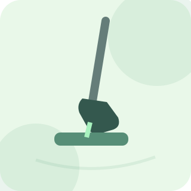

家電
コードレス掃除機は、持つ重さと使う時間で選ぶ

朝にリビングだけ掃除する家と、週末に家じゅうを掃除する家では、必要な連続運転時間が変わります。買い替え前に、いつもの掃除を一度だけ計ってみると、自分が使う時間を基準に候補を絞れます。
床を掃除するときの重さを比べる
メーカーの仕様表では、本体だけの質量と、パイプ・ヘッドを付けた標準質量が別掲載の場合があります。床の掃除を想定するなら、同じ付属品を装着した条件で比較します。階段や棚に使うなら、持ち上げる動きが多いので、重心やグリップの握りやすさも判断材料になります。
最大運転時間の脚注を読む
最大運転時間がヘッドを付けない場合の値なら、床の掃除に使う時間の目安にはしづらくなります。説明書の表から、実際に使うヘッドとモードの組み合わせを探してください。
たとえばフローリングに12分、カーペットに8分かかる場合は、普段のモードで合計20分が最低ラインです。カーペットだけ強モードで使うなら、強モードの運転時間も確認し、充電切れを避けたい日は掃除する場所を分けることも選択肢になります。
片付けまでの手順を想像する
ごみ捨ては、ダストカップを取り外す手順と、フィルターを洗った後の乾燥方法を説明書で確認します。収納は充電台の幅・奥行きに加え、持ち上げて外すための高さとコンセントの位置まで測ってください。長く使いたいなら、交換用バッテリーを自分で取り替えられるか、取り寄せ方法があるかも見ておきます。
買う前に確認すること
- パイプ・ヘッド付きの質量
- 使うヘッドとモードでの運転時間
- 正面から手を伸ばして出し入れできる収納場所